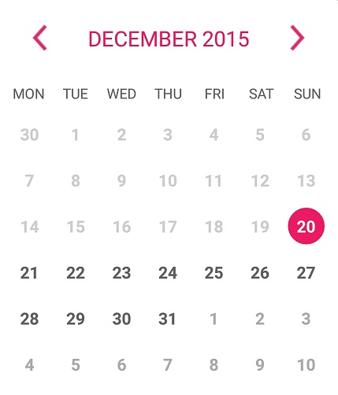
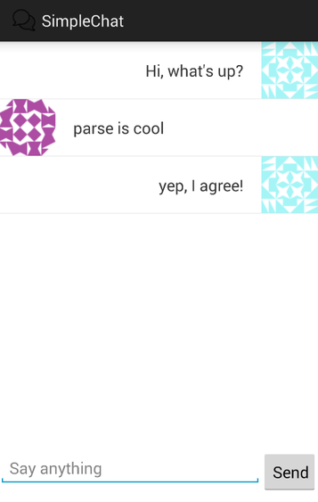

Shift Assign
Synopsis
This Android app is written for resturant managers and employees. It features shift
assignment through a calandar allowing employees to see their shifts and whether shifts
can be changed. Eployees and managers can also chat with each other.
Details
Parse is the database server of choice when implementing employee/ manager accounts
and storing shift times. All members of local to a resturant will have their shift
times mapped to them through parse. There is also a chat client that is implemented
using Node.js. Several networking capabilities of this app is implemented through
socket.io. This app only works online.
Android calandar fragment used for shifts

Node.js chat client

Links
Parse Doc
Node.js Doc
Android Fragments
View repository

© Copyright 2018 Jeremy Cruz